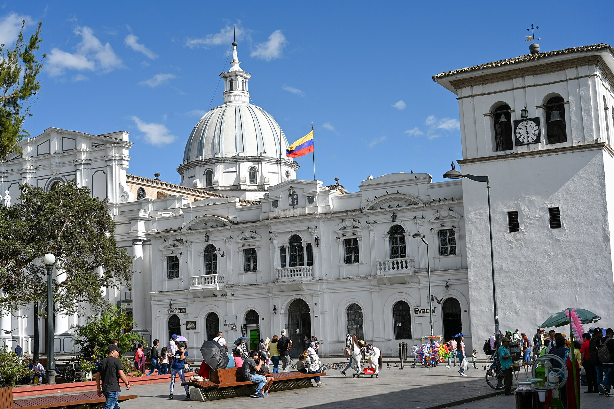
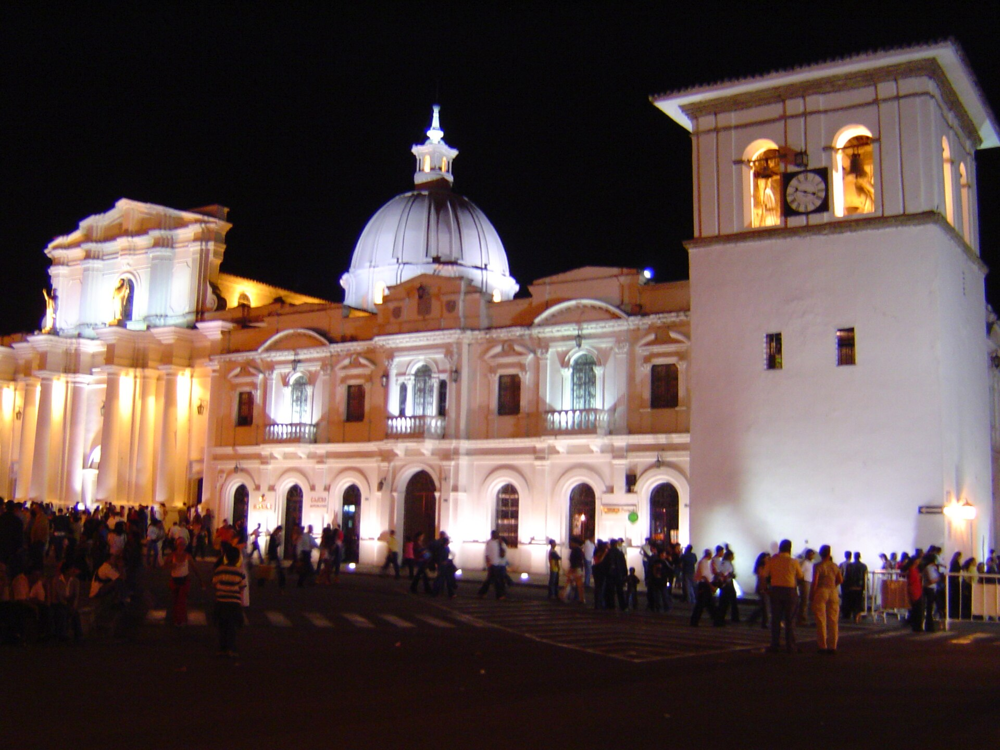
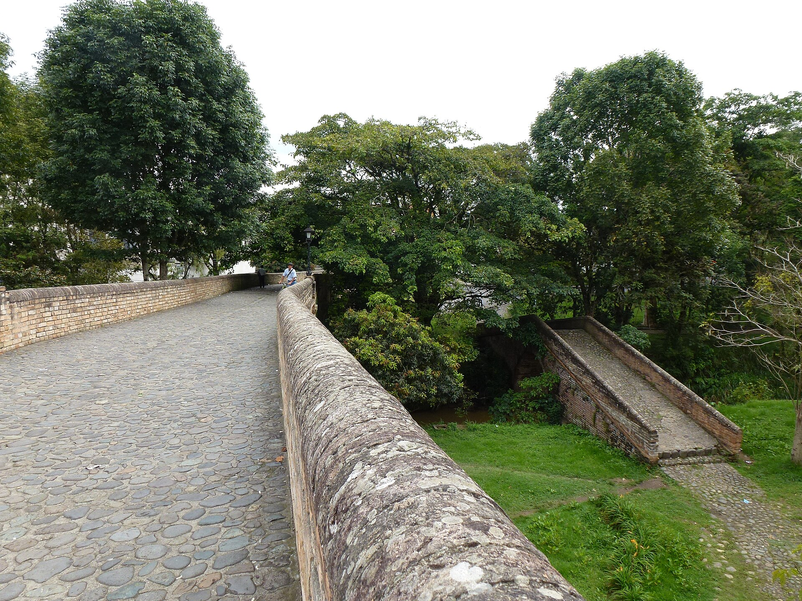

Rutas culturales de Popayán
Recorridos culturales por el centro histórico y sus alrededores para descubrir la arquitectura, la historia y los sabores de Popayán a tu propio ritmo.
Imagen pendiente de autorización
Gastronómica
Camino del Café
Imagen pendiente de autorización
Gastronómica
Sabores del Cauca
Ideal para el primer día
Ruta Histórica y Arquitectónica
Centro Histórico y alrededores · Popayán, Cauca
Un recorrido para descubrir las fachadas coloniales de la Ciudad Blanca, sus plazas, templos y monumentos. Empieza en el Parque Caldas y continúa por los sitios que quieras visitar a tu ritmo.
Abrir recorrido en Google Maps★ 4.6 (17.7 mil)Parque local
Parque Caldas
Punto de partida · Centro de Popayán
El corazón de la ciudad, rodeado de edificaciones históricas y con la estatua del sabio Francisco José de Caldas en el centro.
Cómo llegar
★ 4.7 (114)Lugar de interés histórico
Torre del Reloj
Centro Histórico · Popayán
Construida entre 1673 y 1682, es conocida afectuosamente como la “Nariz de Popayán” y forma parte de la imagen más reconocible del centro.
Cómo llegar
★ 4.5 (3.6 mil)Puente histórico
Puente del Humilladero
Carrera 5 · Centro Histórico
Icónico puente de doce arcos sobre el río Molino, terminado en 1873. Su estructura de ladrillo y calicanto conecta el centro con los barrios del norte.
Cómo llegar
★ 4.6 (4.1 mil)Sitio histórico y mirador
Morro de Tulcán
Norte de Popayán · Cauca
Una pirámide truncada de origen precolombino con vista panorámica de la ciudad y el monumento a Sebastián de Belalcázar.
Cómo llegar
Paradas culturales
Iglesias y museos
Incluye la Iglesia de San Francisco, de estilo barroco, la Ermita y el Museo Nacional Guillermo Valencia. Puedes visitar cada parada por separado.

★ 4.4 (6.1 mil)Atracción turística
Pueblito Patojo
Popayán, Cauca
Un pequeño parque que reúne réplicas de algunos de los monumentos más representativos de la ciudad.
Cómo llegarLas valoraciones y el número de reseñas son referencias compartidas; pueden cambiar. Confirma los horarios antes de tu visita.